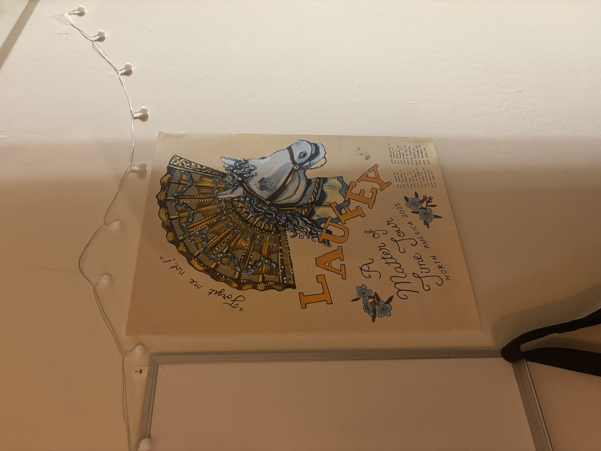
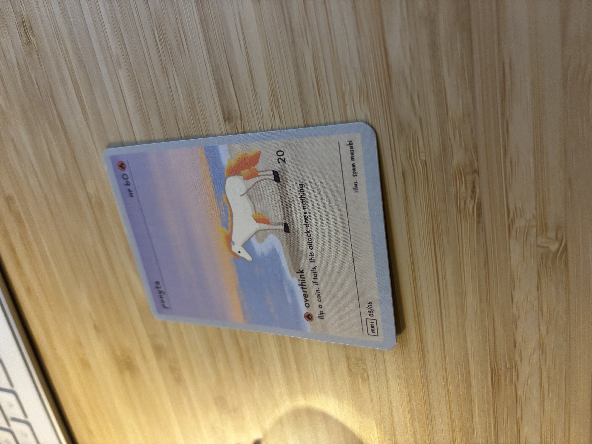

A.1: Shoot the Pictures
To capture the projective transform images, I used my phone camera to take pictures of various scenes, fixing the vertical axis at the camera lens and rotating the camera through the scene. This ensured that the center of projection remained fixed through all the images. I also made sure to not rotate too much to ensure overlap between the images. Below are the sets of images I captured:Set 1

Set 2

Set 3


A.2: Recover Homographies
First Set of Correspondence Points (Image 1) (dots in red)

First Set of Correspondence Points (Image 2) (dots in blue)

These are the correspondences for the first set of images. These correspondences resulted in the following system of equations:
System of Equations Matrix A
[[ 1.30e+03 7.16e+02 1.00e+00 0.00e+00 0.00e+00 0.00e+00 -3.39e+05 -1.86e+05]
[ 0.00e+00 0.00e+00 0.00e+00 1.30e+03 7.16e+02 1.00e+00 -8.19e+05 -4.51e+05]
[ 1.30e+03 1.57e+03 1.00e+00 0.00e+00 0.00e+00 0.00e+00 -3.84e+05 -4.63e+05]
[ 0.00e+00 0.00e+00 0.00e+00 1.30e+03 1.57e+03 1.00e+00 -2.11e+06 -2.55e+06]
[ 2.37e+03 7.10e+02 1.00e+00 0.00e+00 0.00e+00 0.00e+00 -3.31e+06 -9.89e+05]
[ 0.00e+00 0.00e+00 0.00e+00 2.37e+03 7.10e+02 1.00e+00 -1.67e+06 -4.99e+05]
[ 2.33e+03 1.92e+03 1.00e+00 0.00e+00 0.00e+00 0.00e+00 -3.22e+06 -2.65e+06]
[ 0.00e+00 0.00e+00 0.00e+00 2.33e+03 1.92e+03 1.00e+00 -4.19e+06 -3.44e+06]]
System of Equations Vector b
[ 260.45 630.48 295.28 1623.32 1394.21 703.32 1379.96 1795.91 ]
Ah = b, where h is the vectorized form of the homography matrix. The resulting homography matrix is:
Computed Homography Matrix
[[ 2.26 0.07 -2576. ]
[ 0.42 1.87 -892. ]
[ 0.00 0.00 1. ]]
Warped Image (Bilinear Interpolation)

A.3: Warp the Images
Nearest Neighbor vs. Bilinear Interpolation

The left image uses nearest neighbor interpolation. The right image uses bilinear interpolation. Both results look quite similar. However, on some thin lines, the bilinear interpolation appears slightly smoother than the nearest neighbor result.
Rectification Examples
Original (Unrectified) Image
Rectified (Nearest Neighbor)

Rectified (Bilinear)

Rectification Example: Pokémon Card
Original (Unrectified) Image
Rectified (Nearest Neighbor)

Rectified (Bilinear)

Again, the bilinear and nearest neighbor results look quite similar.
A.4: Blend the Images into a Mosaic
To create the mosaics, I first determined a central reference image for each set (usually the middle image). I then computed the homographies from each image to this base image. Using these homographies, I warped every other image into the coordinate frame of the base image.
Then, using the warped correspondence points of each image and the base image correspondences, I calculated an average shift for each image that would align it with the base image. Using these shifts, and the bounding corners of all the warped images, I computed the overall bounding box for the mosaic. I created a blank canvas for the mosaic using those dimensions, and placed the base image in the appropriate location.
For every other image, I placed the warped image onto the mosaic canvas at the calculated shift position relative to the base image. To blend the images and reduce edge artifacts, I used scipy.ndimage.distance_transform_edt to compute a distance transform for each image mask, which gives the distance of each pixel to the nearest zero-valued pixel (i.e., the edge).
Using this as a weight map, I performed weighted averaging of overlapping pixels from different images. For example, if two images overlap at a pixel, I add the pixel values of each image weighted by their distance transform value, and divide by the sum of the weights to get a blended pixel value. This helps make the mosaics look much better by smoothing out transitions between images.
Set 1 Source Images
Mosaic Result

Set 2 Source Images
Mosaic Result

Set 3 Source Images
Mosaic Result

Deliverables
- Code and project webpage.
- All required images, visualizations, and explanations as specified above.